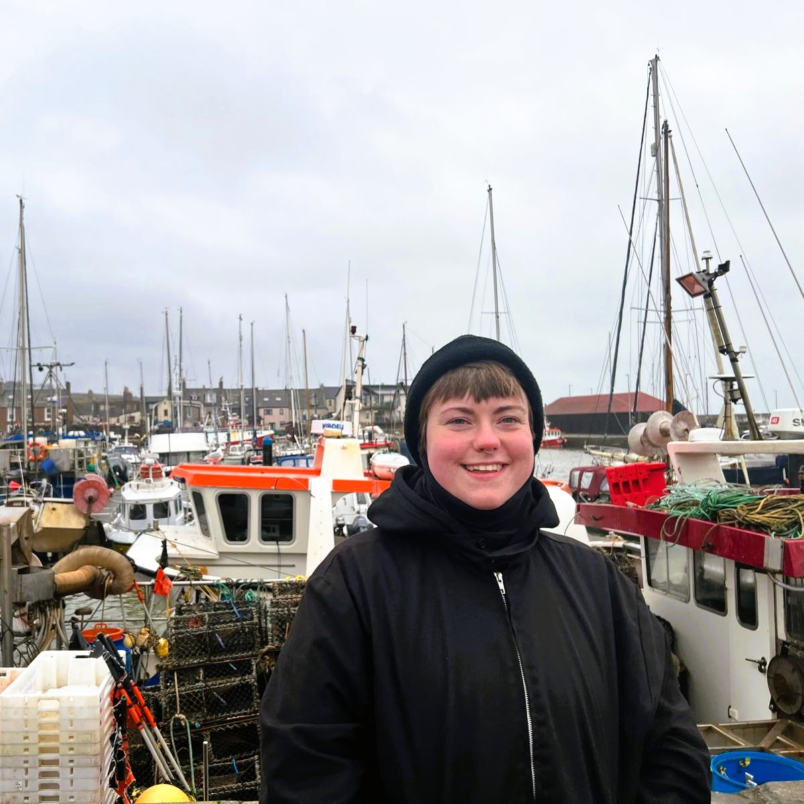

dr. michelle jamieson 🚀

I'm a population data scientist and quantitative methodologist at ADR-S. I received my PhD in Advanced Quantitative Methods from UofG, where my work on quantitative reflexivity began.
Previous to that, I read Research Methods and Global Mental Health at UofG, and Psychology at UWS.
I'm really interested in causal inference, measurement error, model robustness and human-induced variation.